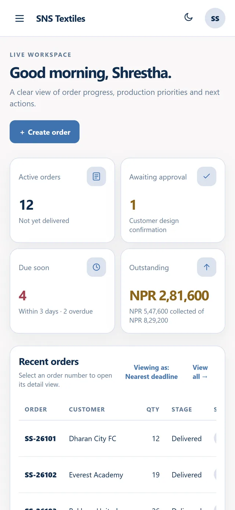
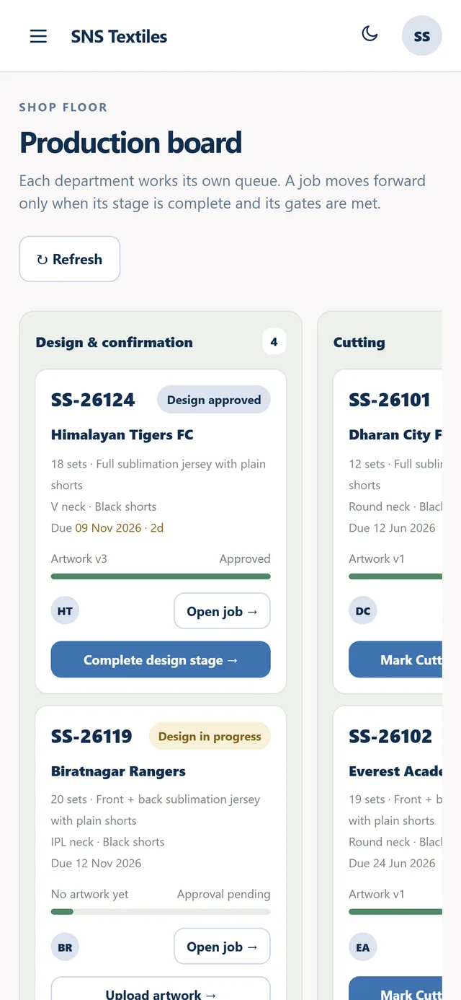
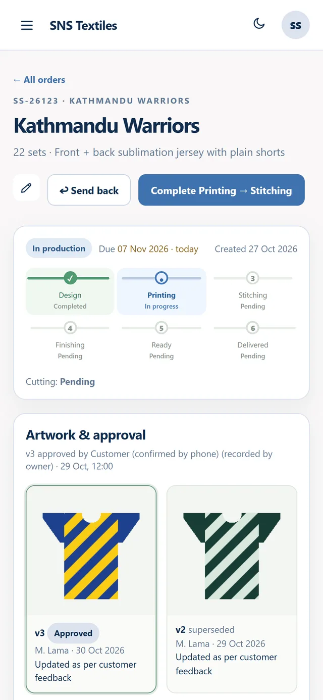

“Where is my order?”
Customers call because they can’t see progress, and the answer depends on who picks up.
Factory management software
Orders, artwork approval, production, billing, inventory and attendance in one system that your whole team and your customers can use.
Sound familiar?
When the shop floor grows, spreadsheets and messaging apps stop keeping up. Jobs get printed before the design is approved, balances get missed, and nobody knows which stage an order is in.
Customers call because they can’t see progress, and the answer depends on who picks up.
Artwork changes go back and forth in chat, and the floor works from an outdated file.
Advances, part-payments and dues are spread across notebooks, bank apps and memory.
Features
Every clip below is the real software running on demo data.
Order intake
Customer, kit style, neck type, quantity, delivery date, rate and advance on one screen. Attach the jersey design and paste the player roster straight from a spreadsheet.
Production floor
Design, cutting, printing, stitching and finishing each see a board of their jobs. A job moves forward only when its stage is done, and every move is recorded with who and when.
Customer portal
Give each client a login. They follow their own orders, review every artwork version and approve it or ask for changes, so nobody has to chase approvals over chat.
Quotations & billing
Pick a customer and a period to see order value, collections and outstanding balance. Record payments, verify them and export statements in a click.
Inventory & materials
Track fabric, inks, paper, thread, trims and packaging. Record what comes in and what goes to the floor, run stock counts and get alerts before you run out.
Attendance
Staff check in and out from their phone. Managers approve check-ins and see hours worked in a table or a monthly calendar.
Reports
Order value against collections month by month, workload by stage, receivables by customer, on-time delivery and product mix, all from the data your team already enters.
Roles & permissions
Start with eight ready-made roles or create your own. Switch any of 79 permissions on or off, right down to who can delete an order or verify a payment.
How it works
Each stage belongs to a department. When they finish, the job moves to the next queue, and the customer sees the progress.
Built for every desk
The whole factory at a glance: orders, dues, workload and every setting.
Quotations, invoices, payments, verification and customer statements.
Upload artwork versions, read customer feedback, complete the design stage.
Their own queue of jobs ready for cutting.
Only approved jobs reach the printing queue.
Mark stages complete and move jobs to dispatch.
Place orders, approve artwork, track progress and send payment proof.
Create roles like “Floor supervisor” or “Store keeper” with exactly the access they need.
Works on any phone
Every screen adapts to a phone, and the app can be installed to the home screen. Check the board from the floor, approve a payment from the road, or check in for a shift.



And there’s more
Full or partial dispatch with method, receiver and tracking reference.
Contacts, order history and balances for every client.
A searchable record of every change, with retention you control.
Add users, reset passwords and deactivate access instantly.
Printable documents generated from the order itself.
Optional module: catalogue, enquiries, reviews and online ordering.
Who it’s for
FAQ
Most people learn their part in an afternoon, because each role sees only its own screens. A printer sees the printing queue; accounts see billing.
Yes. Each customer gets a portal where they see only their own orders, approve artwork, place new orders and send payment proof.
Every screen is responsive and the app can be installed to a phone’s home screen without an app store.
It runs on Node.js and MongoDB on a server you choose: your own machine, a VPS or a cloud provider. Your data stays in your database.
Sessions use secure, http-only cookies. Every request is checked against the user’s permissions on the server, and the audit log records every change.
Cash, bank transfer, cheque, eSewa, Khalti, Fonepay and “other”, each with optional proof of payment and verification.
Book a demo
Tell us how your factory works. We’ll walk you through orders, production and billing using products like yours.